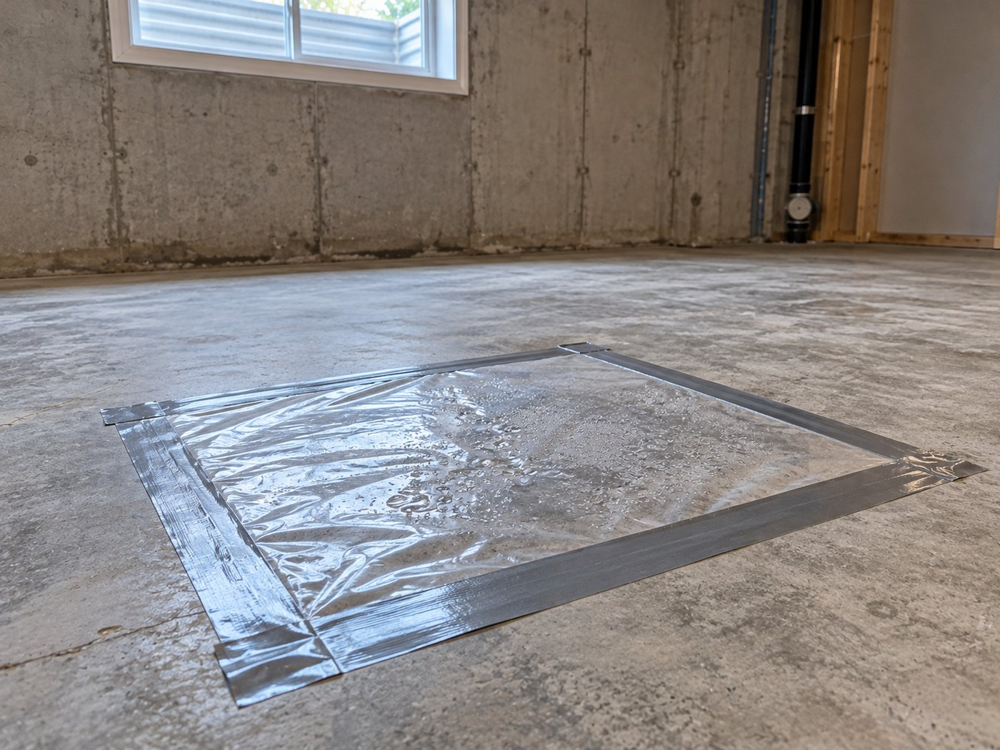
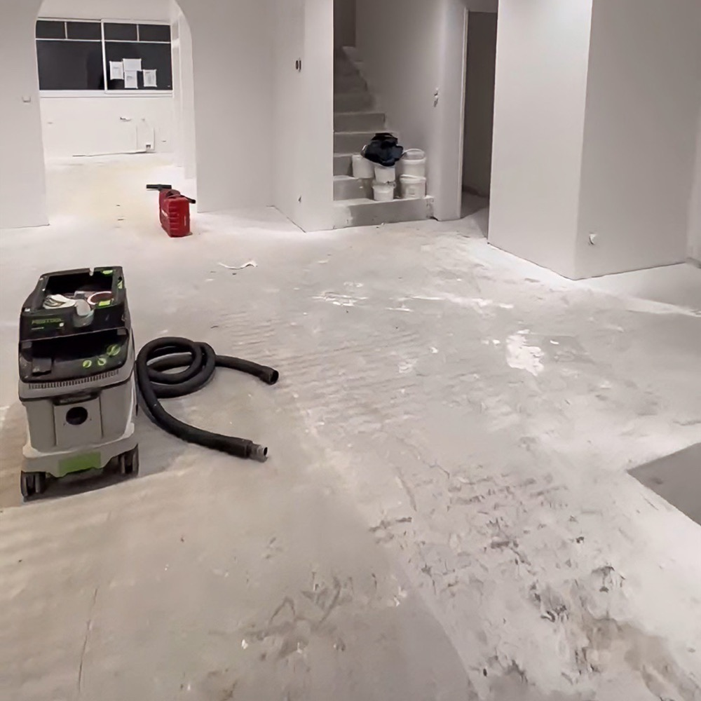
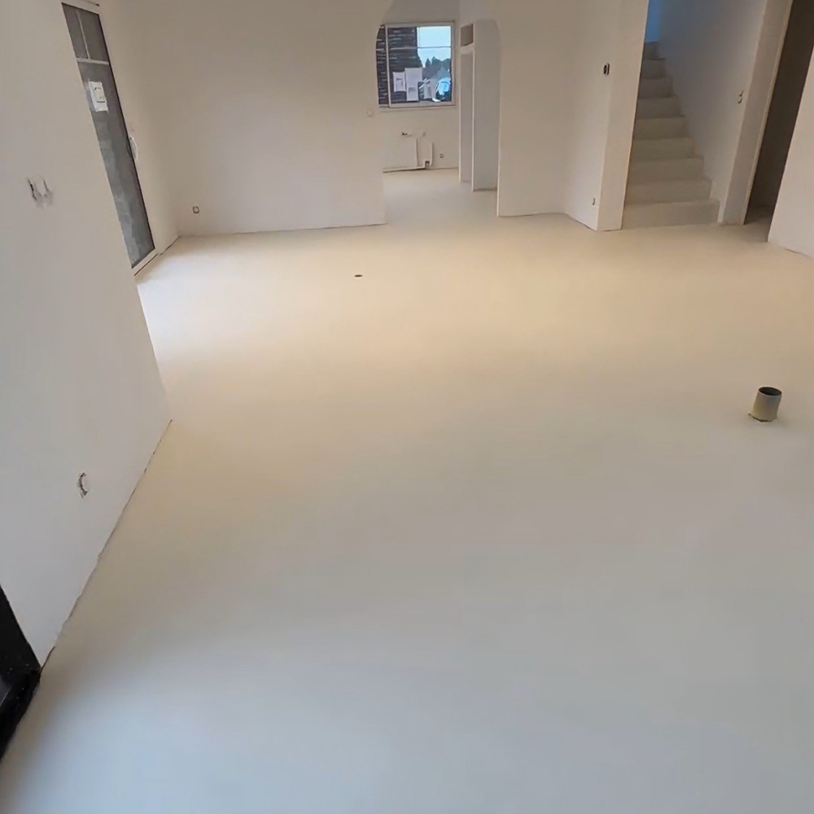

More GTA homeowners are finishing their basements to rent them out. A spring 2026 analysis from the brokerage Wahi put basement suite income at up to $28,800 a year in high-demand areas like Old Toronto. Surveys from HomeStars and Billdr found that many Canadians are choosing to renovate rather than move, especially younger owners.
Most of the planning goes into permits, egress windows and the kitchen. The floor usually gets picked last, often whatever vinyl plank is on sale. In a basement suite, though, the floor deals with three things a main-floor room never does: water, ceiling height and tenant turnover. That's where microcement comes in.
Why the Floor Matters More in a Basement Suite
- Height is limited. The Ontario Building Code sets a minimum ceiling height for a legal secondary suite. Anything you build up on the floor comes off that height.
- Water finds basements. A floor that has to be torn out after one wet spring is a floor you pay for twice.
- Tenants change. Every move-out is a chance for scratches, stains and lifted edges. The fewer seams and grout lines, the less there is to repair between tenants.
Every Millimetre Counts: Ceiling Height
For a secondary suite in an existing house, the Ontario Building Code calls for a ceiling height of at least 1.95 m (6 ft 5 in) over the required floor area, and at least 1.85 m (6 ft 1 in) under beams and ducts (Sentences 9.5.3.1.(2) and (3)). Many older Toronto basements sit close to that line, and some sit just under it.
Here's roughly how much height each floor type takes up:
- Subfloor panels plus vinyl plank: about an inch, once you add a dimpled subfloor panel and the plank on top.
- Porcelain tile on mortar: roughly half an inch.
- Microcement: 2 to 3 mm, applied straight onto the prepared slab.
If your measured height is within an inch of the minimum, that difference can decide whether the suite passes inspection or needs underpinning, which is a much bigger project.
Measure from the bare slab to the underside of the ceiling finish in several spots, and separately under the lowest beam or duct. Confirm the requirement with your local building department before you commit. They have the final say on your suite.
Water: What Happens to Each Floor When the Basement Floods
Toronto basements take on water more often than most people expect. The July 2024 storm alone flooded about 1,000 basements in the city, and the Insurance Bureau of Canada put insured damage across the region at around $940 million.
When water comes in, different floors fail in different ways:
- Carpet almost always comes out.
- Vinyl plank: the planks themselves are waterproof, but water gets underneath them and into the underlay and subfloor panels. Those usually have to come up so everything can dry, and the planks often don't survive being pulled and relaid.
- Microcement is bonded directly to the slab and sealed, so there's nothing underneath to soak. The water sits on top: you pump it out, clean and dry the floor, and touch up the topcoat if it needs it.
A floor that survives a flood doesn't stop the flood. Fix the way water gets in first, then choose the floor.
Microcement is a finish, not waterproofing. If water is coming in, deal with the cause first. The City of Toronto's Basement Flooding Protection Subsidy Program now pays up to $6,650 per property for work like backwater valves and sump pumps, for eligible work completed on or after November 12, 2025. That's worth doing before any finished floor goes in.
Tenants: A Floor With Nothing to Pry Up
Rental floors wear out at the weak points: plank edges that lift, grout that stains, and seams where water from a mop sits. A sealed microcement floor has none of those. It's one continuous surface from wall to wall, and you can run the same finish up into the suite's bathroom and shower so there's no transition to fail.
- Cleaning between tenants is a mop with mild soap.
- Scuffs and wear are handled by renewing the protective topcoat, typically every 8 to 12 years in heavy-use areas, not by replacing the floor.
- Lifespan: properly installed and sealed interior microcement lasts 15 to 25 years or more.
- Slip resistance: a slip-resistant topcoat is available for entries and bathrooms.
How We Put Microcement on a Basement Slab
A basement slab needs a different prep from an upstairs floor, mostly because of moisture. This is the process we follow across Toronto, Mississauga, Brampton, Vaughan and the rest of the GTA:

- Moisture assessment. We look for damp patches, white powdery deposits (efflorescence) and water staining, and we test the slab with a taped plastic-sheet test or an in-slab humidity reading.
- Grinding and repair. The slab is ground to open the surface, old paint and adhesive come off, cracks are repaired, and low spots are levelled.
- The right primer. A dry slab gets a standard bonding primer. A slab that's damp but has no water running through it gets a moisture-tolerant epoxy primer. If water is actively coming through, that's a waterproofing job first, and we'll tell you so.
- Anti-crack layer. A primer with glass fibre mesh goes over the whole floor.
- Levelling and finish coats. Base coats are applied with a trowel and sanded flat, then the decorative coat sets the colour and texture.
- Sealing and topcoat. A sealing primer goes on first, then at least two coats of a two-component protective topcoat.
A typical basement floor takes about 5 to 10 days, depending on size and how much prep the slab needs. Each layer has to dry fully before the next one goes on.

Before
AfterWhat It Costs in Toronto (2026)
Microcement is a premium floor, and we'd rather say that plainly. Here's how it compares with the usual basement options in Toronto. All prices are installed.
| Floor | Installed Cost | Height & Flood Notes |
|---|---|---|
| Vinyl plank (LVP/SPC) | $4–$9 / sq ft | Plus $1–$4 / sq ft for subfloor prep. About an inch with a subfloor panel; underlay and subfloor usually come up after a flood |
| Porcelain tile | $13–$70 / sq ft | About half an inch; survives water, but grout lines stain and crack |
| Microcement (standard) | $20–$35 / sq ft | 2–3 mm; no seams or grout, and nothing underneath to soak |
| Microcement (1,000+ sq ft) | $20–$22 / sq ft | Volume pricing for full basements |
| Microcement (premium system) | $40–$45 / sq ft | Higher-end products; price depends on the job and the material |
In practice, a 500 sq ft one-bedroom suite usually comes to $10,000–$17,500 with a standard system, and a full 1,000 sq ft basement at volume pricing to about $20,000–$22,000. Slab condition, crack repair and moisture treatment move the number.
When microcement is worth the premium
- The basement has taken on water before, or sits in a flood-prone part of the city.
- Your ceiling height is within an inch or so of the minimum for a legal suite.
- You're keeping the property for the long term and want a floor that lasts 15 to 25 years or more through tenant turnover.
- You want one continuous finish from the living space into the bathroom and shower.
If none of those apply (a dry basement, plenty of height, and a short-term plan), vinyl plank is the cheaper sensible choice, and we'll tell you that. If your existing slab is in good shape, staining and sealing the concrete is another lower-cost option worth asking about.
Why Winter Is the Time to Do It
Basement floors are indoor work, so the schedule doesn't depend on the weather. Booking between December and March means the suite is finished and photographed before the spring and summer moving season, when demand for rentals is strongest. It also puts you ahead of the April rush, when our crews move outdoors to porches and pool decks.
Questions to Ask Any Contractor Before They Coat Your Basement Floor
- "How will you test the slab for moisture?" If they don't plan to, that's a red flag in a basement.
- "What primer goes on a damp slab?" The answer should be a moisture-tolerant epoxy primer, not the standard one.
- "How are cracks repaired, and does mesh go over the whole floor?" Slab cracks will telegraph through without both.
- "What's the topcoat, and how many coats?" You want a two-component protective topcoat, at least two coats.
- "Can it run into the bathroom and shower?" One material throughout means no transitions to fail.
- "What's the warranty, in writing?" Ours is three years.
Frequently Asked Questions
Can microcement go on a basement concrete floor?
Yes. A basement slab is a good base for microcement once it has been ground, repaired and tested for moisture. It is applied directly to the concrete at 2 to 3 mm thick, with no subfloor, so it keeps almost all of your ceiling height.
Will microcement work if my basement is damp?
A slab that is damp but has no water running through it can take microcement over a moisture-tolerant epoxy primer. If water is actively coming through the slab or walls, that has to be fixed with proper waterproofing first. Microcement is a finish, not a waterproofing system.
How much does a microcement basement floor cost in Toronto?
In the GTA in 2026, microcement floors typically cost $20 to $35 per square foot installed with a standard system, $20 to $22 per square foot on floors over 1,000 square feet, and $40 to $45 per square foot for premium systems. A 500 square foot suite usually comes to $10,000 to $17,500. Installed vinyl plank runs about $4 to $9 per square foot plus subfloor prep.
How does flooring affect ceiling height for a legal basement suite?
The Ontario Building Code calls for at least 1.95 m of ceiling height in a secondary suite in an existing house, and 1.85 m under beams and ducts. A subfloor panel with vinyl plank adds about an inch, tile about half an inch, and microcement only 2 to 3 mm. Confirm your requirement with your local building department.
What happens to a microcement floor if the basement floods?
Because microcement is bonded directly to the slab and sealed, there is no underlay or subfloor to soak up water. The floor is cleaned and dried, and the topcoat is touched up if needed. Vinyl plank floors usually have to be lifted after a flood so the underlay and subfloor can dry or be replaced.
The Short Answer
For a basement suite, microcement is the floor that keeps your ceiling height, has nothing underneath to soak in a flood, and has no seams for tenants to wear out. It costs more upfront than vinyl plank, so it's worth it when water, height or a long-term plan is part of the picture. When none of those apply, we'll tell you to save your money.
You can read more about the system on our microcement page. If the suite's bathroom still has tile, see microcement over tile.